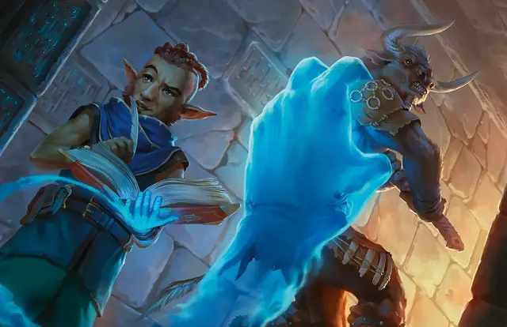

Длань Бигби
Bigby’s Hand
5 уровень, Воплощение

Время сотворения Действие
Дистанция 120 футов
Компоненты В, С, М (яичная скорлупа и перчатка)
Длительность Концентрация, вплоть до 1 минуты
Классы Артефактор, Волшебник, Чародей
Вы создаёте в видимом вами в пределах дистанции незанятом пространстве руку Большого размера из мерцающей магической энергии. Рука существует, пока действует заклинание, она перемещается по вашей команде и подражает движениям вашей собственной руки.
Рука — это объект с КЗ 20, количество её Хитов равно вашему максимуму Хитов. Когда Хиты руки опускаются до 0, заклинание оканчивается. Рука не занимает своё пространство.
Когда вы сотворяете это заклинание, а также Бонусным действием в последующие ходы, вы можете переместить руку на расстояние вплоть до 60 футов, а затем создать один из следующих эффектов:
Сжатый кулак. Рука бьёт по одной цели в пределах 5 футов от себя. Совершите рукопашную атаку заклинанием; при попадании цель получает 5к8 Силового урона.
Могучая длань. Рука пытается толкнуть существо Огромного размера или меньше, находящееся в пределах 5 футов от неё. Цель должна преуспеть в спасброске Силы, иначе рука толкает цель на расстояние не большее, чем количество футов, равное 5 плюс ваш модификатор заклинательной характеристики, умноженный на 5. Рука перемещается вместе с целью, оставаясь в пределах 5 футов от неё.
Сжимающая длань. Рука пытается схватить существо Огромного размера или меньше, находящееся в пределах 5 футов от неё. Цель должна преуспеть в спасброске Ловкости, иначе получит состояние Схваченный (Сл высвобождения от захвата равна вашей Сл спасброска заклинаний). Пока рука держит цель в захвате, Бонусным действием вы можете сдавить цель рукой, нанося Дробящий урон, равный 4к6 + ваш модификатор заклинательной характеристики.
Преграждающая длань. Рука предоставляет вам Укрытие наполовину от атак и иных эффектов, исходящих из её пространства или проходящих через него. Кроме того, её пространство для ваших врагов считается Труднопроходимой местностью.
Используя ячейку заклинания большего уровня. Урон Сжатого кулака увеличивается на 2к8, а урон Сжимающей длани увеличивается на 2к6 за каждый уровень ячейки выше 5-го.